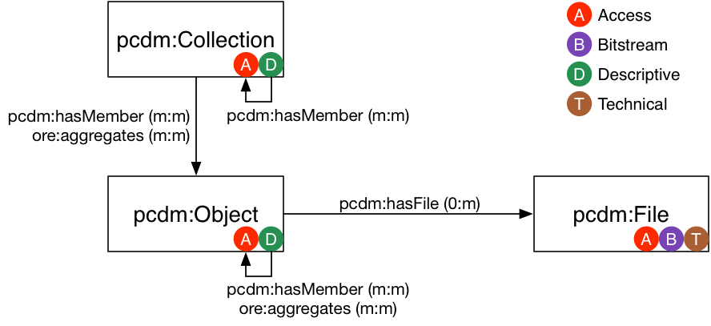
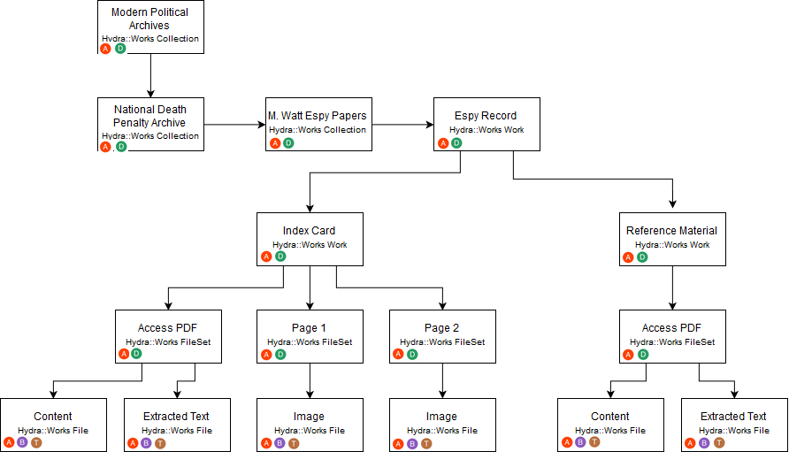
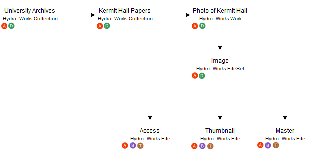

<!doctype html>
<html lang="en">
    <head>
        <meta charset="utf-8">
        <title>reveal-md</title>
        <link rel="stylesheet" href="css/reveal.css">
        <link rel="stylesheet" href="css/theme/moon2.css" id="theme">
        <!-- For syntax highlighting -->
        <link rel="stylesheet" href="lib/css/zenburn.css">

        <!-- If the query includes 'print-pdf', use the PDF print sheet -->
        <script>
          document.write( '<link rel="stylesheet" href="css/print/' + ( window.location.search.match( /print-pdf/gi ) ? 'pdf' : 'paper' ) + '.css" type="text/css" media="print">' );
        </script>
    </head>
    <body>

        <div class="reveal">
            <div class="slides"><section  data-markdown><script type="text/template">## Challenges of Digital Archives at UAlbany

Gregory Wiedeman<br/>
University Archivist
</script></section><section  data-markdown><script type="text/template">
## Overview of University Archives

* University Records
	* Office of the President
	* University Senate
	* University Council
	* Office of the Provost
	* Graduate & Undergraduate Education
		* Records of Schools and Colleges
		* Records of Academic Departments
	* Web Archives
* Student Groups and Manuscripts
	* Student Association
	* Albany Student Press
	* Faculty and Alumni Papers
</script></section><section  data-markdown><script type="text/template">
## SUNY Records Retention

* [SUNY Records Retention and Disposition Schedule](http://system.suny.edu/compliance/topics/records/records-retention/records-retention-schedule/ "SUNY Records Retention and Disposition Schedule")

* [University Archives](http://library.albany.edu/archive/ua)
* [Office of the Senior VP for Academic Affairs and Provost](http://meg.library.albany.edu:8080/archive/view?docId=ua500.xml)

University records are public records, subject to FOIL <!-- .element: class="fragment" data-fragment-index="1" -->
</script></section><section  data-markdown><script type="text/template">
## Collecting Background

* Formal records management program until cut in 1990s
	* Very effective collecting in 1960s and 1970s
* Records Management "distributed" among offices
* Permanent Records should come to me
* Transfers used to happen during moves, when space needed
	* No longer sufficient
* Misunderstanding of archives and our role
</script></section><section  data-markdown><script type="text/template">
## Building a Modern Collecting Program

* Automated digital transfers
* Web crawling
* Disk imaging of external media
* Paper when maintained as such
* Format-neutral practices
* Requires digital infrastructure
</script></section><section  data-markdown><script type="text/template">
## Born-Digital Records Collecting in Practice

* Files On the Live Web
	* Web crawling
* Files dispersed around the University
	* Local Computers
	* Network Shares
	* Cloud Storage
	* Different Software Applications
	* Private Computers
</script></section><section  data-markdown><script type="text/template">
<!-- .slide: data-background="img-iipc/minutes.png" -->
</script></section><section  data-markdown><script type="text/template">
<!-- .slide: data-background="img-iipc/undergradBulletin.png" -->
</script></section><section  data-markdown><script type="text/template">
<!-- .slide: data-background="img/applications1.png" -->
</script></section><section  data-markdown><script type="text/template">
<!-- .slide: data-background="img/applications2.png" -->
</script></section><section  data-markdown><script type="text/template">
#### [Ben Goldman, "Outfitting a Born-Digital Archives Program"<br/><i>Practical Technology for Archives</i>&nbsp;&nbsp; Issue 2 (June 2014)](http://https://practicaltechnologyforarchives.org/issue2_goldman/)


<!-- .slide: data-background="img/diskImaging.jpg" -->

</script></section><section  data-markdown><script type="text/template">
<!-- .slide: data-background="img/transferShares.png" -->
</script></section><section  data-markdown><script type="text/template">
## Transfer Scripts

* Network Folder Share
	* Archives and creator has access
* Python script run on task scheduler
* Weekly checks for new files
* CSV log files of files transferred
* Creates XML accession metadata file
* Runs createSIP.py command line tool
* Enters line in accessions.xlsx
* Manual collecting over GoogleDrive
</script></section><section  data-markdown><script type="text/template">
## Bag-it

* [What our bags currently look like](\\romeo\SPE)
</script></section><section  data-markdown><script type="text/template">
## Maintenance

* Scripts break over time
	* No more ad-hoc approaches
	* No more XML data stores
* Network of well-maintained interoperable tools
</script></section><section  data-markdown><script type="text/template">
## Building Digital Infrastructure

<!-- .slide: data-background="img/systemDesign.jpg" -->
</script></section><section  data-markdown><script type="text/template">
## Implementing Maintainable tools

* [ArchivesSpace Migration](http://169.226.92.31:8080/)
* [asInventory](https://github.com/UAlbanyArchives/asInventory)
* [Find-It](http://libstaff/find-it/)
* UAlbany Bag Spec
* [createSIP v0.2](https://github.com/UAlbanyArchives/createSIP)
* [Bagit Profiles](https://github.com/ruebot/bagit-profiles)
* [UploadTool](https://github.com/UAlbanyArchives/uploadTool)
</script></section><section  data-markdown><script type="text/template">
## Connections through APIs

* [Archive-It API](http://wayback.archive-it.org/3308/timemap/cdx?url=http://www.albany.edu/undergraduate_bulletin/)
* [Wayback Machine API](https://web.archive.org/cdx/search/cdx?url=http://www.albany.edu/undergraduate_bulletin/)
* [ArchivesSpace](http://169.226.92.31:8080)
* [ArchivesSpace API](https://archivesspace.github.io/archivesspace/api/)


	python
	from archives_tools import aspace as AS
	session = AS.getSession()
	for collection in AS.getResources(session, "2", "all"):
		if "ua" in collection.id_0:
			print collection.title

	for collection in AS.getResources(session, "2", "all"):
		if "Baldus" in collection.title:
			for note in collection.notes:
				if note.type == "abstract":
					AS.pp(note)

</script></section><section  data-markdown><script type="text/template">
## Espy Project: Building an Open Digital Repository

* [CLIR-funded grant project to digitize Espy Papers](http://library.albany.edu/archive/espyproject)
* Make data publicly available for computational research
* [Espy Metadata Creation Tool](http://169.226.92.29/)
</script></section><section  data-markdown><script type="text/template">
## Portland Common Data Model


</script></section><section  data-markdown><script type="text/template">

</script></section><section  data-markdown><script type="text/template">

</script></section><section  data-markdown><script type="text/template">
[Example Data Model](https://github.com/UAlbanyArchives/espyMetadata/blob/master/app/models/espy_record.rb)
</script></section><section  data-markdown><script type="text/template">
## Open, Interconnected Workflows

1. Detect accession
2. Get contextual data from ArchivesSpace API
4. Ingest into digital repository
5. Que for review 
6. Expose data into central search index
</script></section><section  data-markdown><script type="text/template">
## Central Search index

* [Our Current Search](http://library.albany.edu/archive/)
* [NC State QuickSearch](https://historicalstate.lib.ncsu.edu/search/?q=war)
</script></section><section  data-markdown><script type="text/template">
## Other Projects

* [Project Electron at Rockefeller Archive](http://projectelectron.rockarch.org/)
* [ArcLight Demo](https://arclight-demo.projectblacklight.org/)
* [ArcLight Project Docs](https://wiki.duraspace.org/display/hydra/ArcLight+Design+Documents)
* [ArcLight Github](https://github.com/sul-dlss/arclight)
* [WarcLight Demo](http://warclight.archivesunleashed.org/)
* [WarcLight Github](https://github.com/archivesunleashed/warclight)
</script></section><section  data-markdown><script type="text/template">
## Questions</script></section></div>
        </div>

        <script src="lib/js/head.min.js"></script>
        <script src="js/reveal.js"></script>

        <script>
            function extend() {
              var target = {};
              for (var i = 0; i < arguments.length; i++) {
                var source = arguments[i];
                for (var key in source) {
                  if (source.hasOwnProperty(key)) {
                    target[key] = source[key];
                  }
                }
              }
              return target;
            }

            // Optional libraries used to extend on reveal.js
            var deps = [
              { src: 'lib/js/classList.js', condition: function() { return !document.body.classList; } },
              { src: 'plugin/markdown/marked.js', condition: function() { return !!document.querySelector('[data-markdown]'); } },
              { src: 'plugin/markdown/markdown.js', condition: function() { return !!document.querySelector('[data-markdown]'); } },
              { src: 'plugin/highlight/highlight.js', async: true, callback: function() { hljs.initHighlightingOnLoad(); } },
              { src: 'plugin/notes/notes.js', async: true, condition: function() { return !!document.body.classList; } },
              { src: 'plugin/math/math.js', async: true }
            ];

            // default options to init reveal.js
            var defaultOptions = {
              controls: true,
              progress: true,
              history: true,
              center: true,
              transition: 'default',
              dependencies: deps
            };

            // options from URL query string
            var queryOptions = Reveal.getQueryHash() || {};

            var options = {
  "transition": "fade"
};
            options = extend(defaultOptions, options, queryOptions);
            Reveal.initialize(options);
        </script>
        
          <script src="/scripts/gwiedeman.github.io"></script>
    </body>
</html>
